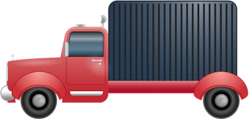

Docs
Everything You Need to Know
Tutorials
Routing
Look Ma, No URL!
Truck's router does not use a url. Huh? Yeah, we thought a lot about routing in the context of an app. Mobile apps that require constant network connection to work suffer from the one problem everyone everywhere struggles with - poor network connections or no connection. At the same time we wanted the benefits of routing to enable handling the different types of navigation in a Truck app. In the end we came up with routing that does not use a url. Instead of attaching a #! fragment to the url or changing the window.location.hash value, you use Truck's route dispatcher. This tells Truck what route you want to load. You can also pass along a unique id or any other value that the route callback can use. Since Truck's router does not use a url, the back button works as expected.
Setting Up a Route
To set up a route, you use the $.Router method. This returns the route object for your app. You'll use this to add routes.
var routes = $.Router();
After creating your route object, you can add routes. Of course, creating a route means you want something to happen with that route is dispatched, so each route gets a callback:
var routes = $.Router();
routes.addRoute({
route: 'detail',
callback: function() {
alert("You've just landed on the detail screen!");
}
});
So, now we have a Truck route defined, but how do you activate one? There's no url, so links aren't going to do it. But Truck apps don't use links for navigation anyway. They use element attributes to define how navigation works. For example, to make a navigation list go to a detail page, you use the attribute data-goto and give it the value detail. When the use tap's the list item with that value, Truck will direct the user to that screen and it will automatically dispatch the vaue as a route. Since we have a route defined for detail, when the user taps the list item with data-goto='detail', Truck will take the user there and execute our route callback.
Good so far, but sometimes you want to have multiple list items leading to the same detail screen and loading different content depeding on which item the user tapped. No problem. You can include a unique id with a route. You do this by adding it to the route with a color ":"
<ul class="list">
<li data-goto="detail:apples">
<h3>Apples</h3>
</li>
<li data-goto="detail:oranges">
<h3>Oranges</h3>
</li>
<li data-goto="detail:bananas">
<h3>Bananas</h3>
</li>
</ul>
In the above markup, notice that all list items are pointing to the same destination screen, "detail". However each one also has a unique id as a fruit. Ids can be whatever you need or suits your purpose. You could use a simple descriptor as we've done above, or a guid. When Truck sees a navigation value with an ID, it extracts the id and dispatches it with the route value. You can capture that id value as the argument of your routes callback:
var routes = $.Router();
routes.addRoute({
route: 'detail',
callback: function(id) {
alert("You want to see the fruit: " + id);
}
});
By capturing a route's id, we can do more complex things, such as filtering out a data object from a collection so that we can render its content in a view:
var routes = $.Router();
routes.addRoute({
route: 'detail',
callback: function(id) {
// Filter the chosen fruit from the collection:
var chosenFruit = fruitsCollection.filter(function(fruit) {
return fruit.id = id;
});
// Rener the detail view with the fruit:
ChosenFruitView.render(chosenFruit);
}
});
This works great for navigating around an app, but routes also provide another useful feature, communicating with a remote server. If you wish to use a RESTful interface for persisting local actions to a server, you can get the current full path of a route. Use the method $.Router.getFullRoute. This will give you the route, including route ids, separated by slashes:
var currentRoute = $.Router.getFullRoute(); // Possible value: 'main/fruits:banana'
After getting the full path, you can post it to a server in an Ajax/Fetch request.